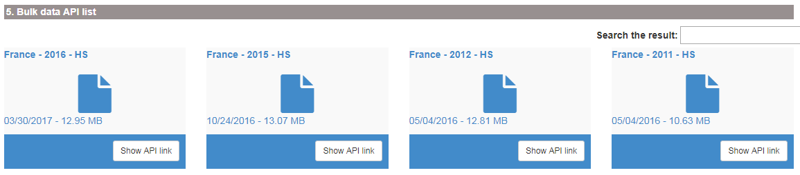

Trade data sources overview
Eduard Bukin
22 September, 2017
To download entire report in a file, select the format: PDF Report or Word report.
Trade classifications
Harmonized System - HS
Officially, World Customs Organisation (WCO) is responsible for maintenance of the HS classification up to 6 digits. Any extension of the HS classifications beyond 6 digits - so called Tariff - line classification is developed by each country individually.
UN SITC and BEC classifications
United Nations Statistics Division is responsible for maintenance of several classification systems for trade and products. Among them there are Central Product Classification (CPC), Standard International Trade Classification (SITC), Classification by Broad Economic Categories (BEC) and International Standard Industrial Classification of All Economic Activities (ISIC).
FAO Commodity List
Withing the FAOSTAT FAO uses own system for classifying all commodities. It is called FAO Commodities List (FCL).
UN Comtrade data
Comtrade is a UN based comprehensive trade data collection and dissemination platform maintained and owned by The United Nations Statistics Division (UNSD). From the FAO building, everyone has full access to all Comtrade services. All information is available on the Comtrade website https://comtrade.un.org/.
In Comtrade there are few main options of data access:
Regular download - manually insert a query in the browser and get a table in the browser or download a
.csvfile with selected data;Bulk download - manually insert short query on a web page, or use the browser command line (address line in the browser) to pass arguments to the server. In return, user will download a zip archive with data that covers trade of selected country (or all countries) in one time period (year or month) and specified coding system (HS as reported, HS2007, HS2012, etc.). Bulk download has an option to download data of all reporters for one period/coding system in file;
Official and not official data visualization solutions.
Data availability in Comtrade
To save time before starting analysis, it is always good to know data availability in Comtrade. There are two interfaces for data availability analysis:
New trade availability visualization tool https://comtrade.un.org/data/da, where it is possible to explore one country availability or download (clicking
Downloadbutton) an extensive.csvfile with information about all available data.Old outdated interface for data availability per country, commodity, year and other parameters is available at https://comtrade.un.org/db/mr/daReportersResults.aspx.
It is also possible to access data availability for the Bulk download. This data is available at the address line call: http://comtrade.un.org/api//refs/da/view?parameters. More information here.
Regular download in Comtrade
Source
Regular downloads is available here: https://comtrade.un.org/data/. This is a query based approach to load Comtrade data selecting a specific range of parameters. With the regular download is it possible to obtain a CSV file, which can be analyzes in excel, R, Stata and other tools.
How to access data
For an extensive overview, see the tutorial video below (https://www.youtube.com/watch?v=oflKZUj2BgE).
The most common query that will return data that we need in 90% of our analysis is the following:
- Type of product: Goods;
- Frequency: Annual;
- HS: As reported (Most frequently used because it combines all codes that were ever recorded);
- Period: 2014-2016 (Limited up to 5 in regular download);
- Reporter: All, or anything needed;
- Partners: World, or anything needed;
- Trade flow: Import and Export (select Import and Export instead of all to not receive data about re-export and re-import);
- HS (as reported) commodity codes: Total, any 2, 4 and 6 digits code (11, 1101, 110100).

Data response
Normally, data is returned in the long format with the variables describing main data dimensions selected above and variables with Trade quantities, Trade value, and units of measurement.
Bulk download in Comtrade
Comtrade bulk download is available at the web page https://comtrade.un.org/data/bulk.
There are two options how to access bulk data in Comtrade:
- Web based query in the browser. Link: https://comtrade.un.org/data/bulk;
- API call based approach to load Comtrade data. Link: https://comtrade.un.org/data/doc/api/bulk/.
Web based bulk query
Source
Web based query for accessing Comtrade bulk data in the browser is available here: https://comtrade.un.org/data/bulk.
First time you need to access it from the FAO buildings in order to authorize your email. Insert your email in the “Enter your email” field and press “Authenticate my IP”. After that your email will be saved in the Comtrade database and you will be grated with the access to the bulk download interface (same address https://comtrade.un.org/data/bulk).

How to access data
In order to access Comtrade bulk data on the bulk data access page select required set of parameters. For example, to download bulk commodity statistics for France, select:
- Type of product: Goods;
- Frequency: Annual;
- HS: As reported;
- Period: All;
- Reporter: France (or All - all reporters in one file or any single reporter that you needed);
- Publication data: keep unchanged.

After clicking “Preview” yo will be returned with the list of all bulk data files available for your selection. Clicking on any of them will run the file, clicking on “Show API link” will provide you with the API data request command (see the next subsection) for returning a bulk data file. Be aware that any bulk data file could range in size from 1 to 500 megabyte.

Data response
Your browser will download one zip archive with data for a selected country (all countries), period and classification.
Attention! Data files could be very. In zipped format file size may range from 1 to 500 megabyte. Un extracted format, file size could be up to 9 gigabytes.
API bulk query
Source
If you do not want to click in the browser, you can use the API for accessing Comtrade data. Extensive explanation about the Comtrade API tools is available here https://comtrade.un.org/data/doc/api/bulk/.
How to access data
To access Comtrade bulk data with API, we need to construct a request, insert it to the browser command line and run it.
To request a bulk data file we need to use the specific format explained here. The main idea is to construct a request based on the template http://comtrade.un.org/api/get/bulk/{type}/{freq}/{ps}/{r}/{px}?{token=} specifying correct parameters:
type- trade type C - Commodities of S - Services;freq- frequency A - Annual or M - Monthly;ps- period coverage for annual dataps=YYYY- e.g.ps=2010, for monthlyps=YYYYorps=YYYYMM;r- reporter area code - e.g.r=804orr=All. Extensive list available here;px- classification, available values are: HS - Harmonized System (HS) as reported, H0-HS 1992, H1-HS 1996, H2-HS 2002, H3-HS 2007, H4-HS 2012 and others see;token- optional parameter for data from outside of the authorized network.
For example, we want to request monthly data freq=M of commodities trade type=C for All reporters r=ALL for period January, 2017 ps=201701, in the HS as reporter classification px=HS. The request is http://comtrade.un.org/api/get/bulk/C/M/201701/ALL/HS. We insert this request to the browser adders line and download the file.

Data response
Your browser will download one zip archive with data for a selected country (all countries), period and classification.
Attention! Data files could be very. In zipped format file size may range from 1 to 500 megabyte. Un extracted format, file size could be up to 9 gigabytes.
Token for data access
To generate an authentication token for the UN Comtrade from the registered IP range (i.e. from the FAO headquarters), we first need to go to the UN Comtrade authentication page and insert our email into the Sign in using: > IP Authentication: field. Pressing Authenticate my IP will ensure we are registered in the UN Comtrade system. Please note, you need to do this only once.
Subsequently we need to go to comtradePlus.APIand select /getSubUserToken in the Auth section . After inserting the email, which you used to register above, into the corresponding field, press “try it out”:
In Response Headers the token will appear as a long string of symbols and characters. This token is to be copied to a secure place and used to access data in some programming cases or in the World Bank WITS database.
Data visualization options
UN Comtrade lists several visualization platforms on the page https://comtrade.un.org/labs/. Here, we will discuss some of them in more details.
Comtrade data-explorer
Comtrade data explorer https://comtrade.un.org/labs/data-explorer/ (unfortunately was not working on 2017-08-31). A tool for visualization of the main trade flows between selected reporters and partners of the selected commodity. Here, you will find a .pdf guidelines on how to use Comtrade data-explorer.
Limitations:
- Commodities are not defined using the HS commodity codes, but as a free text, therefor, it is difficult to understand the meaning behind some commodity names.
- Options of custom-defined aggregates of countries or commodities are not available.
Bilateral trade exploration tool
BIS trade in goods tool is available at https://comtrade.un.org/labs/BIS-trade-in-goods/ it allow to visualize trade of a selected good from a selected reporter to all or selected partner.
Limitations:
- Commodity coverage is limited to the 2 digits HS commodity description;
- Options of custom-defined aggregates of countries or commodities are not available.
World Bank data
World Bank offers great variety of databases on the subject of trade, agriculture and many others. The full list is available here. We will discuss some selected data sources in more details below. In particular, we will focus on:
World Integrated Trade Solution (WITS)
TCdata360
Miscellaneous data sources
WITS
Source
World Integrated Trade Solution is located here: http://wits.worldbank.org/. However, this is the guest users interface with the access to simple summary data. If you need to access full capabilities of WITS database, you need to log-in here (see more details below).
WITS database is a website, that uses trade and tariff data from various sources (UN Comtrade, WTO, World Bank) in order to provide users with the interface for generating own trade statistics and indicators. WITS application also provides tools to perform single and multi-market tariff cut simulations. Extensive description of the methodology, used by WITS is located here: http://wits.worldbank.org/methodology.html.
WITS provides multiple ways to access trade, tariff and non-tariff data. It has the following main sections.
- TradeStats: Summary trade, tariff, non-tariffs and development indicators;
- Analytical Databases: Databases derived using official trade data sources;
- Global Preferential Trade Access Database (GPTAD): Search across different preferential trade agreements.
For more information, see this introductory overview video.
How to access data
WITS is a complex tool, however it has a very good set of learning materials. If you have time, you can take an eLearning course, otherwise, it is possible to follow video tutorials from WITS.
Registration and login
In order to use full capabilities of the WITS database all users need to log-in. The log in page is located here. You can access this page from the main WITS website, by clicking first ‘Register’ in the top right corner  . Follow all registration instructions. People with the FAO email are allowed to register in WITS and use all available capacities of the database. After you have finished your registration, click ‘log in’ in the same top-right corner of the WITS website, enter your email and password and you will log into the WITS database:
. Follow all registration instructions. People with the FAO email are allowed to register in WITS and use all available capacities of the database. After you have finished your registration, click ‘log in’ in the same top-right corner of the WITS website, enter your email and password and you will log into the WITS database:

Other important informatoin
When the user are logged into WITS, the website offer a greater range of documentation and metadata. In particular:
WITS data availability report can be explored and generated here, it is only possible after log in;
Reference tables for converting countries, commodities and classifications are here;
Detailed product nomenclature is here;
Comprehensive WITS guide is here;
WITS has a developed API interface for direct data access from a programming environment. More information is available here. Here is the WITS-API USER GUIDE.
WITS Trade data
There are two main types of trade data in WITS, (1) UN Comtrade up to 6 digits oh HS classification trade data and (2) UN Comtrade Tariff-line data. To access UN Comtrade data we only need to log in to WITS with our user name (email) and password. However, if we want to extract bulk Comtrade data, we may need to provide our Comtrade data access token (see more details below).
Advance query for trade data access
The main tool of generating user-defined trade data reports from the UN Comtrade data in WITS is in using the Home > Advanced Query > Trade Data (UN Comtrade). Here you can select any reporters, partners, commodities, periods, and classification systems in order to generate desirable table with the trade data.
Important to note. At this step our queries are limited to the maximum of 100 000 rows. In order to be able to download more than 100 000 rows, you either need to log in from the FAO network, or provide a UN Comtrade token to the WITS database by clicking “click here to activate” on the page Home > Advanced Query > Trade Data (UN Comtrade) and follow the instructions:

A comprehensive instruction on how to use advanced queries is provided in the WITS tutorial video.
IMPORTANT about ommodity classfication Selecting the commodity classification is always tricky, when you want to construct a consistent time series they covers multiple years (5 and more)? you may find that more modern HS classifications will not be available in the past. For tackle this problem you need to switch to the old HS classification, such as HS 2002 or even HS 1992. Be ready, that the coding system in the old HS classifications may differ significant. To overcome this problem, check the WITS mapping tables or tables of concordance.
User defined groups of commodities and countries
Tutorial video Highlights both options for user defined grouping of data. The best description of how to create and use the user-defined country and commodity groups is described in the WITS e-learning here in the sections 20 and 21. Please check them for the guided instructions.
The lists of standard - predefined commodities and country groups are here: http://wits.worldbank.org/referencedata.html in the sections Products and Countries.
Tariff-line and bulk Comtrade data
WITS offers a user friendly interface for accessing Tariff-line data (link to the interface) and bulk Comtrade data (link to the interface). Practically, this interface repeats the one available in the Comtrade. To learn more about how to use it, see:
Triffs data
WITS Trade and Tariffs data offers access to the UNCTAD and WTO databases and the tariffs data in particular. It is available on the Home > Advanced Query >Tariff and Trade Analysis page. To get to know how to use this data, see this tutorial video.
It is also possible to download bulk tariff data from the UNCTAD TRAINS database directly from WITS. You need to follow Home > Advanced Query >Bulk Download (TRAINS) to access the download interface. For more information, see tutorial documentation and tutorial video below:
Trade indicators
The Trade Outcomes Indicators tool lets you to construct numbers of trade indicators that are classified into four dimensions of trade performance: Orientation and Growth, Export Diversification, Export Sophistication, and Export Survival. All calculations are performed by the WITS, according to the published methodology based on the UN Comtrade data.
To see explicit details on how to use Trade Outcomes Indicators, see this video.
TCdata360
Source
TCdata360 provides open data on trade and competitiveness. The site aggregates and visualizes data from multiple sources and presents it in tandem with other knowledge and resources. The website is available at https://tcdata360.worldbank.org/. At TCdata360 offers a wide range of user friendly instruments for trade data comparison and analysis’.
See this brief guide video:
How to access data
This is a purely analytic tool with very intuitive interface. Unfortunately, there are no guides, which would describe all possibilities of data access options. Some main features are explained here: https://tcdata360.worldbank.org/faq.
Developers options
There are numerous options of data access for developers and different software, so-called API interface. To see more about it visit https://tcdata360.worldbank.org/tools.
Miscellaneous
Most recent WB researches on trade
Temporary Trade Barriers Database
The Temporary Trade Barriers Database (TTBD) contains detailed data on more than thirty different national governments’ use of policies such as antidumping (AD), global safeguards (SG), China-specific transitional safeguard (CSG) measures, and countervailing duties (CVD).
For more information, see the Temporary Trade Barriers Database and Global Antidumping Database.
Trade costs database
The Trade Costs database provides estimates of bilateral trade costs in agriculture and manufactured goods for the 1995-2015 period. It is built on trade and production data collected in 178 countries.
The database is available here.
Interface to access UNCTAD TRAINS data
The UNCTAD Trade Analysis Information System (TRAINS) is a comprehensive computerized information system at the HS-based tariff line level (HS 6-digit). The database provides data on trade control measures, including:
- Tariffs;
- Para-tariffs;
- Non-tariff measures;
- Imports by suppliers at HS 6-digit level.
The interface is available here.
World Trade Organization data
The WTO website offers sophisticated options for researching members’ customs duty rates and in many cases imports. In particular, there are:
Tariff Analysis Online tool http://tao.wto.org/;
Tariff Download Facility http://tariffdata.wto.org/.
Regional Trade Agreement Information System (RTA-IS) http://rtais.wto.org/;
Trade data time series http://stat.wto.org/;
Miscellaneous information and overview of the all statistical sources of WTO are here: https://www.wto.org/english/res_e/statis_e/statis_e.htm.
Both tools allow assess to the same data about the trade policy, collected by WTO. Below, we will discuss both tools in more details.
Tariff Analysis Online (TAO)
This facility allows you to access the WTO’s Integrated Data Base (IDB) and Consolidated Tariff Schedules (CTS) database on-line, select markets and products, compile reports and download data.
Source
The TAO tool, could be accessed here: http://tao.wto.org/?ui=1.
How to access data
The data could be accessed after registration and log in-in. To register, press Click here to register ( ) on the main page of the TAO website. Use registers log in and password to access the database.
) on the main page of the TAO website. Use registers log in and password to access the database.
The interface of the database is not very intuitive. To understand how to use it, see the guidlines and help.
General procedure of data access are the following:
Prepare a query either in IDB or in CTS databases
 ;
;Insert main parameters of the query and save it:
Click
Basic queryand select the query you have saved from theSaved Querylist.Generate the report based on the selected query:

Data response
With the present tool, data could be returned as a report in browser or as an exported excel data file. For more information, try to use it, or see the help.
Tariff Download Facility
Source
Tariff Download Facility is located here: http://tariffdata.wto.org/Default.aspx?culture=en-US.
How to access data
Official guide of how to use the tool is here
Regional Trade Agreement Information System (RTA-IS)
This database contains information on only those agreements that have either been notified, or for which an early announcement has been made, to the WTO.
Source
RTA-IS is located here: http://rtais.wto.org/
Data access
The user interface allows you to access data on RTAs notified to the GATT/WTO in the following way:
- By country/territory;
- By criteria;
- List of all RTAs in force;
- List of early announcements;
- Pre-defined reports and Summary Tables containing WTO Figures on RTAs.
each of the options offers a list of links with more details on each specific agreement.
For more information see the user guide.
WTO measures and notifications
I-TIP Goods provides comprehensive information on non-tariff measures (NTMs) applied by WTO members in merchandise trade. The information includes members’ notifications of NTMs as well as information on “specific trade concerns” raised by members at WTO committee meetings. Its aim is to serve the needs of those seeking detailed information on trade policy measures as well as those looking for summary information. It includes links to the WTO’s extensive tariff and trade databases, and to DocsOnLine system.
Source
The tool is available at http://i-tip.wto.org/goods/Default.aspx.
Depends on what you need, select one of GRAPHS over TIME, TABLES by PRODUCTS, TABLES by MEMBERS, or a DETAILED QUERY. See how to for more information.
Data response
Data could be downloaded in pdf reports about the notification and measures applied by each country to a specific commodity.
Trade time series
WTO Statistics Database allows you to retrieve statistical information in the following presentations:
The Trade Profiles - provide predefined information leaflets on the trade situation of members, observers and other selected economies;
The Tariff Profiles - provide information on the market access situation of members, observers and other selected economies;
The Aid for Trade Profiles - provide information on trends of aid for trade, trade costs, trade performance and development for selected Aid for Trade recipients;
The Time Series section - allows an interactive data retrieval of international trade statistics.
Sourece
This data source if available here: http://stat.wto.org/
How to access data
All data is accessed in the similar way, following intuitive step by step process as on the picture below.
Miscellaneous information sources
WTO Trade policy Review https://www.wto.org/english/tratop_e/tpr_e/tpr_e.htm.
E-ping SPS & TBT notification alert and notification system http://www.epingalert.org/en
International Trade Center data
Trade Map - http://www.trademap.org/ - provides - in the form of tables, graphs and maps - indicators on export performance, international demand, alternative markets and competitive markets, as well as a directory of importing and exporting companies. Trade Map covers 220 countries and territories and 5300 products of the Harmonized System. The monthly, quarterly and yearly trade flows are available from the most aggregated level to the tariff line level (under subscription).
Main products available from ITC are:
- Trade Map
- Market Access Map
- Standards Map
- Investment Map
- Trade competitiveness Map
ITC User guide - this is a complete guide over all ITC trade map services.
Trade Map
http://www.trademap.org/Index.aspx
You need to follow a registration procedure in order to use more functions of the ITC Trade Map. The same registration credentials could be used to access other ITC services.
The interface of the Trade Map is very intuitive. For and extensive overview of the functionality, see: * Official Trade Map user guide; * Trade Map video tutorial playlist.
Market Access Map
Market Access Map provides six modules for retrieving, analysis and downloading information on tariffs, trade and non-tariff measures (market requirements).
http://www.macmap.org/Main.aspx. Use the same log in information as you use for the ITC trade map.
For more information on how to use see:
Supporting materials:
- E-Learning - Web based e-learning from ITC;
- Methodology of the Market Access Map that is developed and used by ITC for the analysis;
- Data availability;
- Product nomenclatures;
- Glossary
Standards Map
Standards Map provides comprehensive, verified and transparent information on voluntary sustainability standards and other similar initiatives covering issues such as food quality and safety. The main objective of the programme is to strengthen the capacity of producers, exporters, policymakers and buyers, to participate in more sustainable production and trade.
Supporting materials:
Investment Map
Investment Map is produced by the International Trade Centre (ITC) and the United Nations Conference on Trade and Development (UNCTAD) in partnership with: the World Association of Investment Promotion Agencies (WAIPA); and the Multilateral Investment Guarantee Agency (MIGA), part of the World Bank Group.
Investment Map combines statistics on foreign direct investment and international trade, tariff data and activities of multinational firms. The tariff data includes MFN tariffs as well as multilateral, regional and bilateral preferences and covers ad valorem equivalents of specific tariffs, tariff quotas and anti-dumping duties. Tariff and trade data are available for merchandise goods (not services) at the 6-digit level of the Harmonized System for about 5,000 product items. Information on foreign direct investment (FDI) is available on goods and services for up to 150 sectors.
See:
Supporting materials:
Trade Competitiveness Map
http://tradecompetitivenessmap.intracen.org/
Analyse country and product competitiveness with trade flows. It does provides snapshots of the countries trade indicators for the list of predefined commodities.
Supporting materials:
- Trade Performance Index
- National Export Performance and National Import Profile;
- User guide about the Consistency of Trade Statistics
CEPII
CEPII is a French research center in international economics which produces studies, research, databases and analyses on the world economy and its evolution. It was founded in 1978 and is part of the network coordinated by the Economic Policy Planning for the Prime Minister. It conducts researches using the databases, models, expertise and international cooperation. CEPII is organized around four research programs. The overview of the CEPII activities is here: http://www.cepii.fr/CEPII/en/cepii/cepii.asp. On one of the following links you may find more information about CEPII’s researches, publisations, events and data.
CEPII gathers and harmonizes data from different sources, produces indicators and statistical measures. Data and figures are available online as well as interactive panorama of 80 countries on CEPII.
Relevant data solutions
HIGHLIGHTS
- Gravity
- EconMap
- EQCHANGE
- Export Sophistication
- ProdComp
- TradeProd
- Profiles Pays / Country Profiles
- BACI - World trade database
- FDIMap - Foreign Direct Investment database
- RCA - revealed comparative advantage database
- Trade Unit Values (TUV)
- Trade Prices
- World Trade Flows Characterization
In details
(Please note, below, we describe only relevant data solutions. In the end we provide information how to access this data)
CHELEM - Comptes Harmonisés sur les Echanges et L’Economie Mondiale - the CHELEM database [International trade flows, balances of payments and world revenues], developed by the CEPII, has been recognized as one of the most useful tools to analyse global economic trends in a framework combining coherence, exhaustiveness and reliability. Available on line by subscription at: https://chelem.bvdep.com/.
Geography
GeoDist provides several geographical variables, in particular bilateral distances measured using city-level data to account for the geographic distribution of population inside each nation. Different measures of bilateral distances are available for 225 countries. For most of them, different calculations of “intra-national distances’’ are also available.
Gravity - CEPII makes available a “square” gravity dataset for all world pairs of countries, for the period 1948 to 2015, allowing the estimation of international flows as a function of GDP, population and trade costs.
Market Potentials - Market Potentials offers six distinct indices of proximity to world markets for more than 150 countries from 1960 to 2009. Since the early 1990s’ international trade analyses has emphasized how proximity to large markets determines economic development and shapes international trade patterns.
Macroeconomics
EQCHANGE - QCHANGE is a global database of annual indicators on effective exchange rates.
Institutional Profiles - The “Institutional Profiles Database” (IPD) provides an original measure of countries’ institutional characteristics through composite indicators built from perception data. The database was designed in order to facilitate and stimulate research on the relationship between institutions, long-term economic growth and development.
Production & Specialization Indicators
ProdComp - The ProdComp database allows price and productivity levels to be compared for several countries in the manufacturing sector.
TradeProd - The TradeProd database proposes bilateral trade, production and protection figures in a compatible industry classification for developed and developing countries.
Profiles
- Profils Pays / Country Profiles - Allows to visualise information about countries. so called country profiles. Direct link http://visualdata.cepii.fr/panorama.
Trade & International Investments
BACI - BACI is the World trade database developed by the CEPII at a high level of product disaggregation.
FDIMap - The FDI (Foreign Direct Investment) database provides a worldwide coverage (96 countries of the GTAP 6.2 database for stocks and 70 countries for flows) of harmonized bilateral flows and stocks of FDI for 26 sectors, in line with the Eurostat classification.
Network Trade - This dataset explores international trade data through the lenses of Network Analysis, in order to visualize the World Trade Network and describe the topology of the network of world trade. The details of such analysis are provided in a companion paper De Benedictis et al (2013).
RCA - The new RCA database contains revealed comparative advantage measures (RCA) obtained by using the methodology suggested by Costinot et al. (2012) - adjusted to some extend for a proper worldwide comparison of indexes.
Trade Unit Values (TUV) - The TUV database is a worldwide unit value database developed by the CEPII.
TradePrices - Export and import price indices can be used to analyse terms of trade, inflation or volume/price elasticities in open economies.
TRADHIST - This dataset has been built in order to analyze in historical perspective, using gravity equations, the globalization process through bilateral International trade data (see Fouquin and Hugot Working paper n°2016-13, Mai 2016).
World Trade Flows Characterization - Trade Unit Values, CEPII’s database providing a world trade matrix of unit values for more than 230 countries and 5 100 products over the period 2000-2015.
Trade Protection
AVEs-Services - AVE-Services contains ad valorem equivalents of restrictions on cross-border trade in services for 118 countries and 9 sectors, using the GTAP databaseof trade in services for 2011.
MAcMap-HS6 - Market Access Map (MAcMap) provides a disaggregated, exhaustive and bilateral measurement of applied tariff duties.
NTM-MAP - The CEPII NTM-MAP (Non-Tariff Measures MAP) database contains indicators measuring the incidence of Non-Tariff Measures by using different methodologies and the UNCTAD TRAINS Database as source data.
How to access data (Generic)
To log in into any of the above mentioned databases, you need to follow a simple procedure:
Go to the page of any database, for example RCA;
On the right side, under “Download page” click
Registerand follow the registration procedure. Tick all databases, which you need:

Confirm your email in the confirmation email received after completing registration;
Log in to the database inserting your email under “Download page” on the right side of the page.
After log in in, most of the data is downloaded via links in the
xlsorstatdata files.
BACI database
BACI is the World trade database developed by the CEPII at a high level of product dis aggregation. To access BACI database, you need to do the following:
Go to the BACI website at: http://www.cepii.fr/CEPII/en/bdd_modele/inscription.asp?id=1
Select
REGISTERin the right panel:
Insert all information on the
BACIregistration page including CT token in the fieldAuthorization code(see Comtrade section for more information). After you have inserted everything, press register.
MIT-Harvard ‘Economic Complexity’ Solutions
MIT-Harvard ‘Economic Complexity’ Solutions are rather similar tools for visualizing trade data by reporters, Partners, Commodities and trade flows. Added values of these tools is in their suggestive nature. For example, Observatory of Economic Complexity suggests to the user examples of the research questions and how to answer them. All these tools evolved from the master thesis of Alexander Simoes and a collaborative work at MIT and Harvard
IMPORTANT! Data used in the Economic Complexity tools is sourced from the Centre d’Etudes Prospectives et d’Informations Internationales (CEPII) in the BACI Data-set. Economic Complexity Data processing methodology is explained here. CEPII BACI methodology of data processing is explained here
The Observatory of Economic Complexity
The Observatory of Economic Complexity - http://atlas.media.mit.edu/en/ is a tool that allows users to quickly compose a visual narrative about countries and the products they exchange. It was Alexander Simoes’ Master Thesis in Media Arts and Sciences at the MIT Media Lab, which you can read here. Source code for the OEC is here.
Introductory Video is available here.
The Observatory of Economic Complexity from Lupa Productora on Vimeo.
Atlas of economic complexity
The Atlas of economic complexity - http://atlas.cid.harvard.edu is a powerful interactive tool that enables users to visualize a country’s total trade, track how these dynamics change over time and explore growth opportunities for more than a hundred countries worldwide. The Atlas online was originally conceived of as a versatile, interactive tool to make trade data not only available, but also usable and to synthesize insights from research on Economic Complexity.
Globe of economic complexity
The Globe - http://globe.cid.harvard.edu/ is an interactive visualization of economics data. It uses a dot-based representation, where each dot encodes a segment of $100 million worth of exports by countries. As total world exports accumulated to $15.3 trillion in 2012, it plots and animates 153,000 dots to generate geographical maps, node link diagrams and various stacked graphs.
Miscellaneous data sources
Global Trade Atlas (GTA)
This is a trade data sources (formerly) purchased by FAO and available to the users with the ligin creditentials. To find more information about it, please contact to Adam Prakash.
UNCTAS STAT
Statistical tools maintained and supported by UNCTAD. It gives access to basic and derived indicators built upon common rules, harmonized environment and clear methodology supported by powerful data browsing system.
EU Customs data
The Commission develops and operates several databases in conjunction with Member States’ Customs and Taxation Services. The databases are part of the information systems of Taxation and Customs Union. Although VIES has been developed and is operated at a national level, it can also be accessed via this site.
EU The Market Access Database
The Market Access Database (MADB) gives information to companies exporting from the EU about import conditions in third country markets:
Copyright © 2017 Eduard Bukin. All rights reserved.